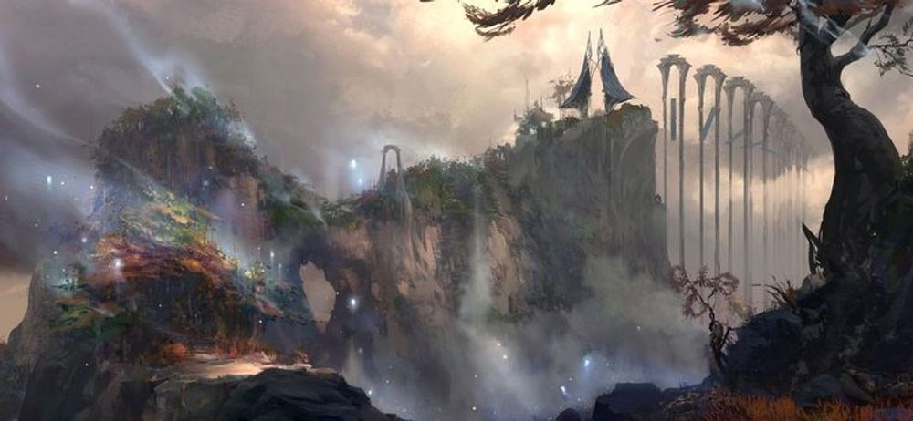

개요

리그 오브 레전드의 등장 국가로, 룬테라의 북동쪽에 위치한 거대한 군도다.
단순히 하나의 국가라고 부르기에는 매우 방대한 문화와 환경이 있는 지역이다.
룬테라의 발로란 대륙, 슈리마 대륙(남부대륙)에 이은 3대 대륙중 하나로 공식 분류 되어있으며, 대륙이라기에는 작고 섬이라기에는 꽤나 크다.
자연과 영적, 내적가치, 마법을 중시하며, 다양한 문화와 사상, 언어, 인종이 뒤섞여 살고 있다. 태고의 마력에 가까운 장소라서 '최초의 땅'이라고도 불리운다.